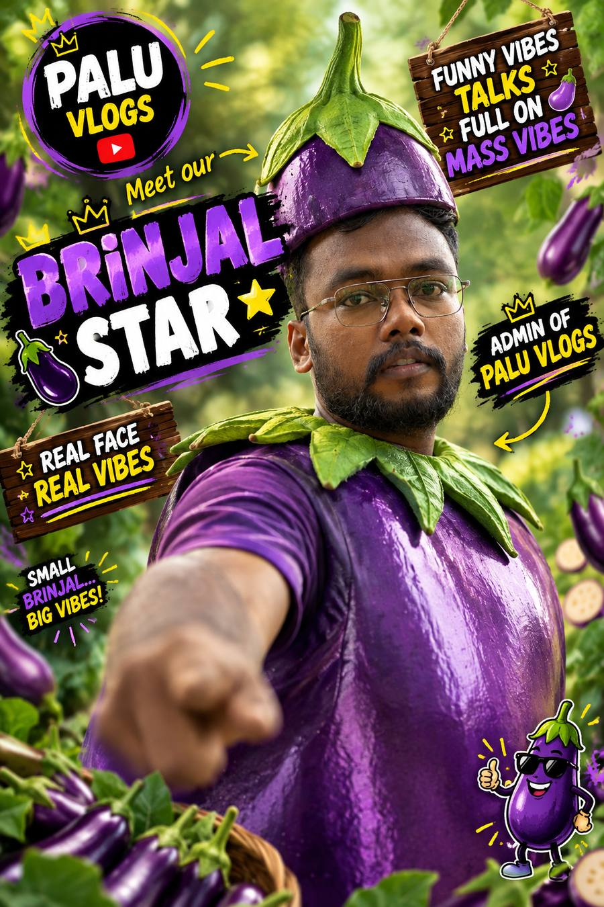
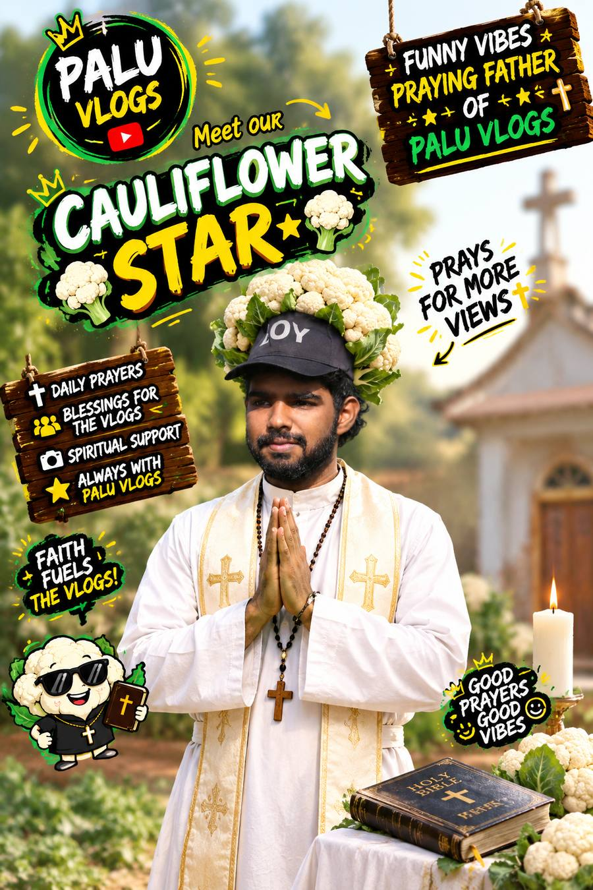
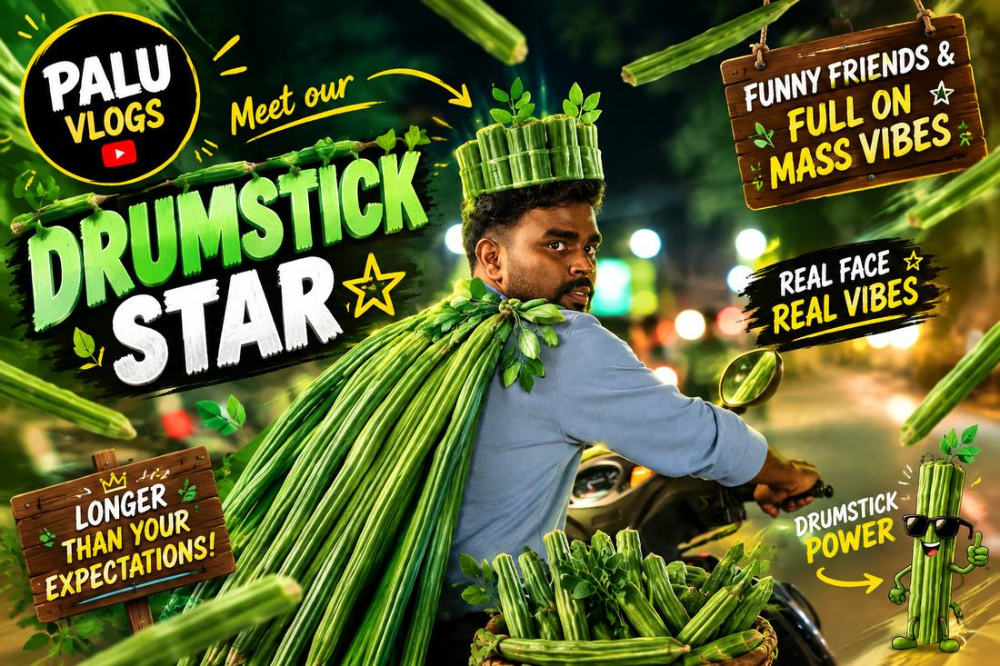
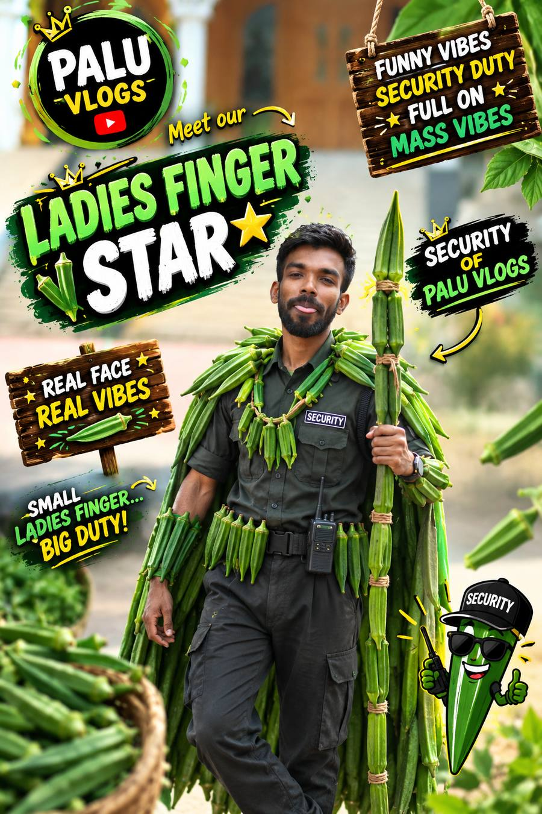
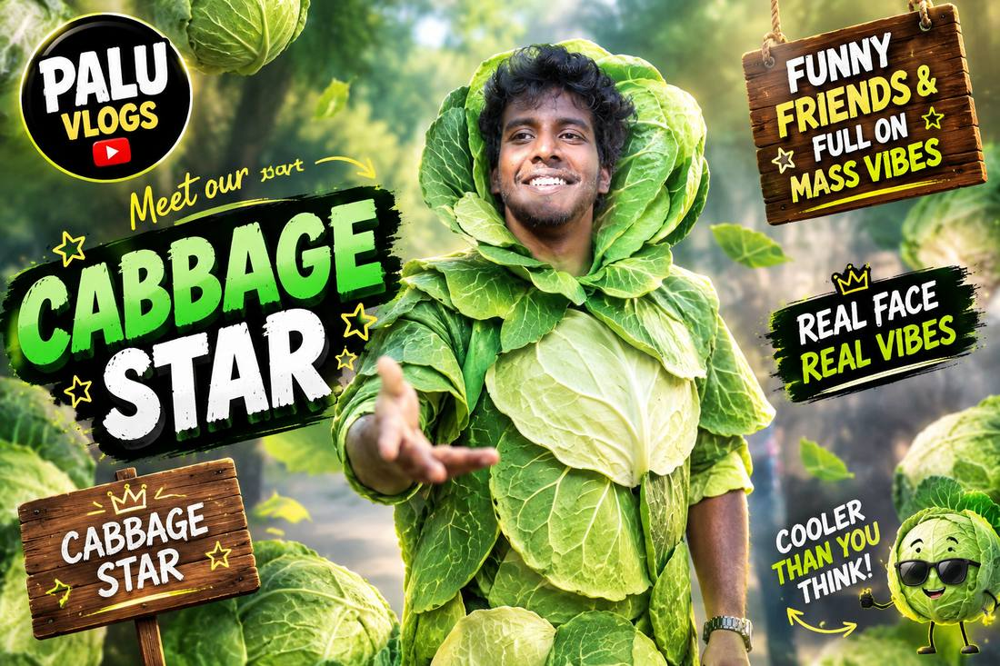
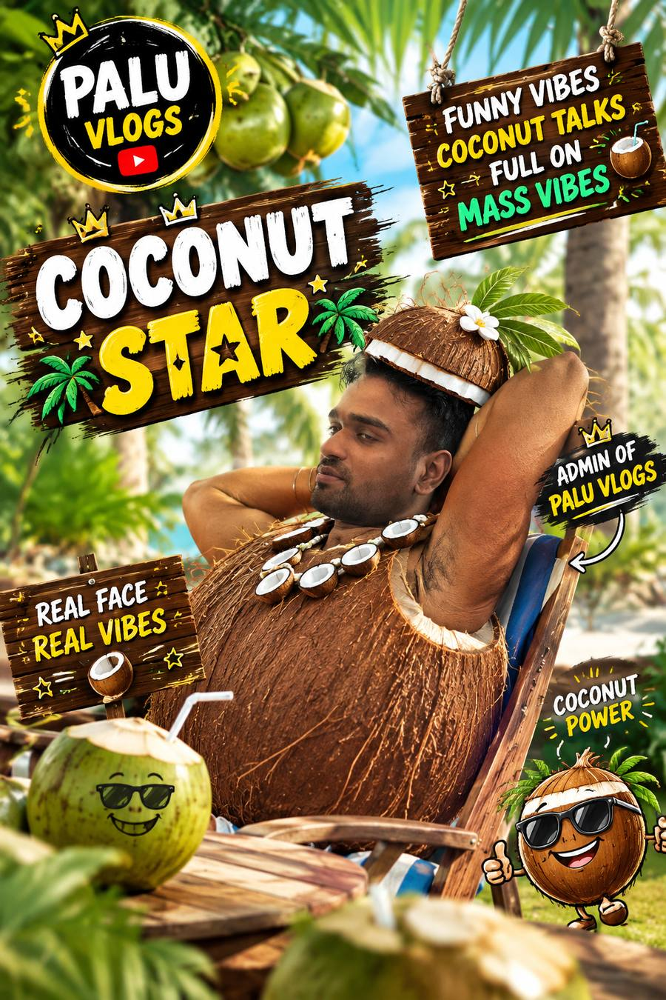
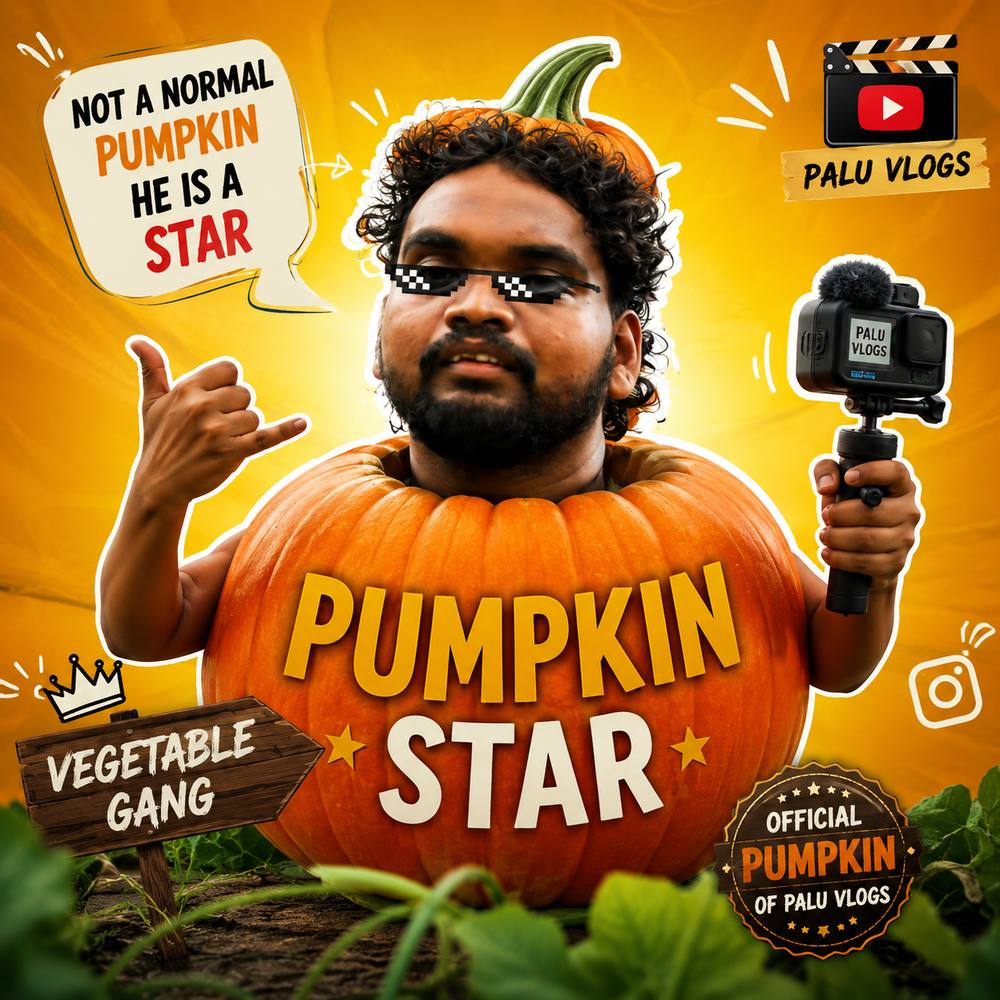
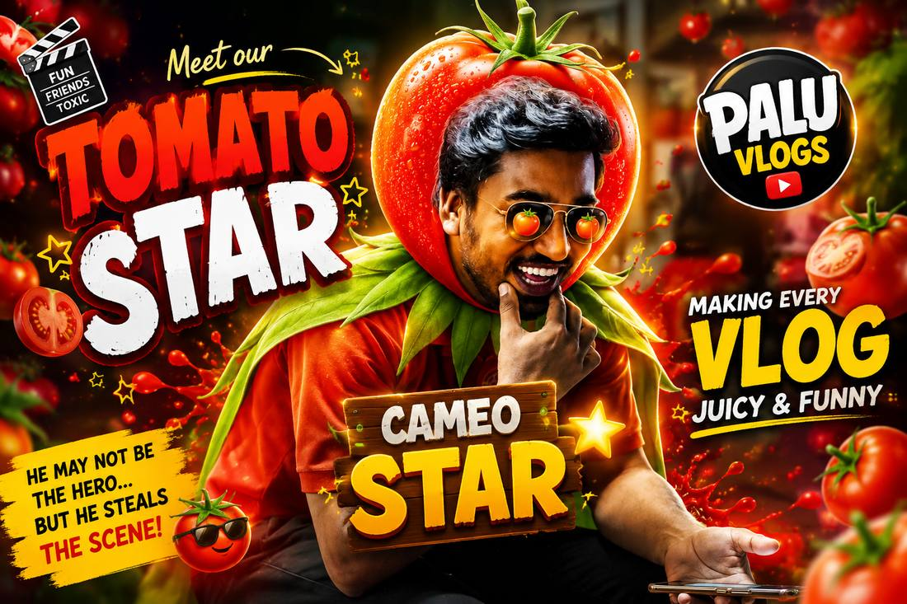
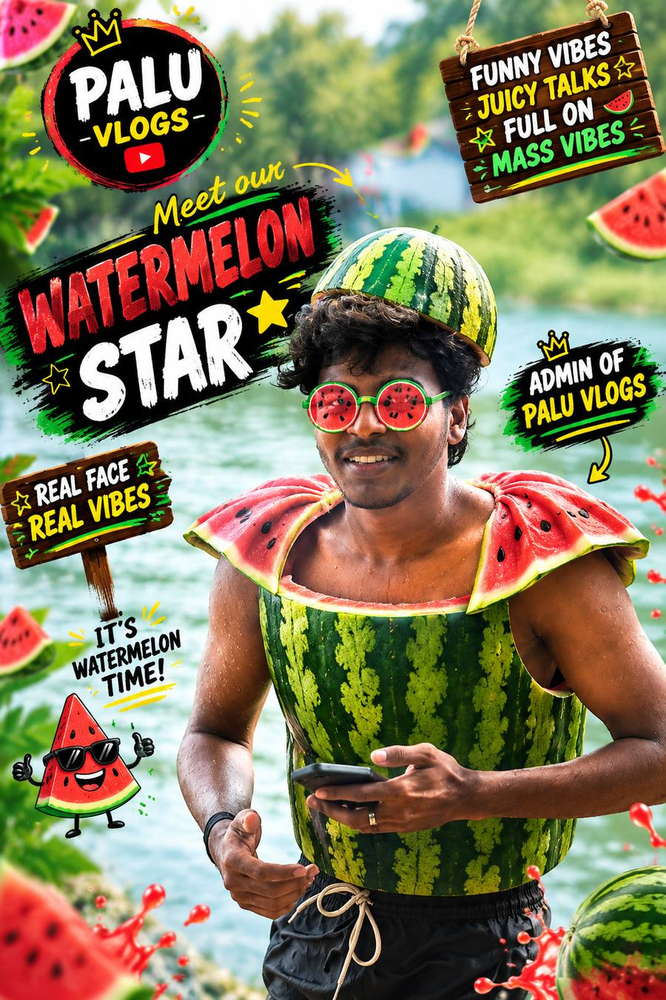
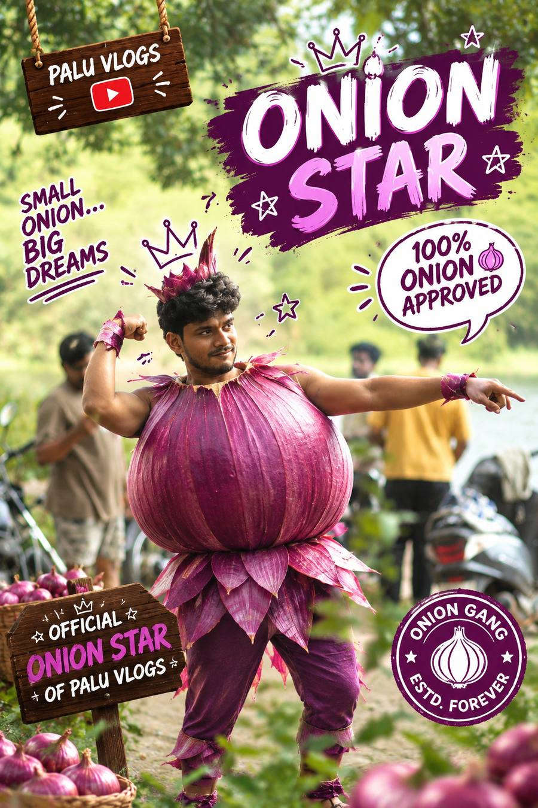

★
Brinjal Star
Admin · Palu Vlogs
Small brinjal, big vibes. Runs the channel and still shows up to film in a purple eggplant suit without complaint.
Profile & Stats →
Four friends, one camera, and a running joke that got completely out of hand. Road trips, street food, random detours, and a vegetable-costume bit that somehow became the whole channel.

Fresh episodes weekly
Every member gets crowned with a vegetable persona for the bit — it started as a one-off joke and never stopped. Click on any star to view their full bio and stats!

Small brinjal, big vibes. Runs the channel and still shows up to film in a purple eggplant suit without complaint.

Blesses every upload before it goes out. Daily prayers, spiritual support, and unreasonably good views luck.

Longer than your expectations, faster than your scooter. Rides in, drops the punchline, rides off.

Small ladies finger, big duty. Guards the gear, the snacks, and keeps the group chat under control.

It's watermelon time whenever he's on camera. Juicy talks, zero filter, and 100% summer road trip energy.

Cooler than you think, wrapped in more leaves than a forest. Always the first one up for the next dare.

Coconut power, beach-chair energy. Books the destination, then refuses to leave the hammock.

Not an ordinary pumpkin — he's a star. Behind the camera as often as in front of it.

He may not be the main character, but he steals the scene every single time. Makes every vlog juicier.

Small onion, big dreams. Somehow possesses the most mysterious layers of anyone in the group.
Life-ne oru Palu style-il. Jumps into the river first, thinks about it later, and somehow that's the whole brand.
Try searching for "Potato", "Watermelon", or click "All Stars".
Unscripted road journeys across Kerala, impromptu food challenges, and vegetable costume chaos.

Brinjal Star walks into a crowded vegetable market in full costume to buy actual brinjals. Chaos immediately follows.

Four friends, two scooters, and raincoats over vegetable costumes. We lost the drumstick outfit at the viewpoint.

Watermelon Star challenges Potato Star to eat the hottest beef fry and porotta without taking a sip of lime juice.

Palu Vlogs started as a group of friends filming their own road trips and never stopped. No script, no crew — just whoever's free that weekend, a scooter, and whatever roadside costume shop happens to be open.
Every episode is real face, real vibes. Trips to the backwaters, street food runs, random challenges, and a running vegetable-star bit that the audience now asks for by name.
Behind-the-scenes candid shots from our latest road adventures. Click any polaroid to view full-screen!



New vlog every Sunday — road trips, pranks, thatte kada food runs, and whichever vegetable draws the short straw next.